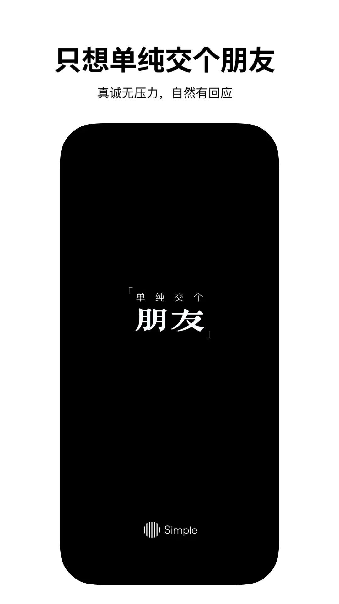

Simple 用了三个月，我踩过的五个坑和爬出来的姿势
Simple 这款匿名社区应用看着简单，实际有几个容易翻的小坎。找不到 Welog 入口、帖子发了没人理、内容被拦……把我踩过的五个坑整理出来，帮你少走弯路。
安装包是从官方下载拿的，第一次点开 Simple 的时候，我以为就是又一个匿名树洞 App——广场刷刷动态、发两条碎碎念，没什么门槛。结果用了快三个月才发现，它藏着不少反直觉的设计，看着简单，实际有几个坑第一次碰很容易懵。
不是什么大问题，就是那种"以为自己懂了、结果操作半天不对"的小摩擦。写下来，给刚入坑的朋友当参考。
坑一：找不到 Welog 在哪里——以为是个新功能，原来是个隐藏开关
症状：更新日志天天提 Welog、小组、档案馆、周报，App Store 副标题也写着"树洞日记"，可我翻遍首页四个标签，没一个叫 Welog 的地方。连搜都搜不到。
原因：Welog 根本不是一个独立标签。它和频道共用首页底部第二个按钮——长按那个按钮才会切换。默认进的是频道，长按一下就切到 Welog，再长按切回来。这是更新日志里明确写过的，我后来翻了Simple文档才注意到，但写得太不起眼，我第一次见到这条提示是在更新第五次之后。

解法：别在标签页里找 Welog，它就是长按隐藏的。如果你发现首页突然变成了日历视图、动态变成了日志流——恭喜，你已经切到 Welog 了，再长按一下就切回去。
坑二：频道发帖没人理——不是内容不行，是分区和标题的问题
症状：在频道里发了一条自认为挺有意思的帖子，两小时零回复。盯着刷新键等了半小时，以为自己被限流了。
原因：频道是分区社区，和广场的全量推送逻辑不一样。我那次是在"三角地"板块发了一条关于考研的帖子，分区选错了。后来才知道，频道里发错分区是最常见的翻车点——管理员不会帮你挪帖，帖子就静静沉在不对的板块里，目标用户根本看不到。另外标题写得太笼统（我写的是"求助"两个字），在论坛式的信息流里，没人会点一个标题叫"求助"的帖子。
解法：
- 发帖前先确认分区对不对——找实习去"找工作啦"，聊考研去"校园学习"，二手交易去"三角地"的二手专区；
- 标题写具体："求推荐靠谱考研政治老师"比"求助"有效十倍；
- 如果半夜发的，别等了——频道是异步社区，深夜发的帖子到第二天早上才有人刷到，不是没人看，是还没醒。
坑三：内容被审核拦截——以为是玄学，原来有规则
症状：发了一条自认为完全正常的动态，被系统拦下了。改了改措辞重发，又被拦。再改再发，第三次直接连账号都临时禁了。
原因：Simple 的内容审核不是玄学，是三层机制在工作——文本、图片、音频、视频全覆盖，广场、频道、聊天全场景审核，还有关键词提取。我那次第三次重发是同一内容高频重试，触发了违规行为本身的判定。隐私政策里写得明明白白：平台会对所有用户发布的内容进行合规性审核，并且留存作为投诉举报的证据。
一个常见的误解是"匿名=免审核"，逻辑恰好相反——匿名社区更依赖审核来维持干净的生态，App Store 高赞评论里"没有那么多乱七八糟的东西和广告"这个评价，就是审核筛出来的。
解法：
- 被拦先看系统提示——它通常会告诉你大致的原因类别（敏感表述、人身攻击、违规内容等）；
- 修改后重发，换一种中性说法，别原样重试；
- 认为误判就走申诉渠道，不要硬扛高频重发。Simple官网的隐私政策和社区规范里有完整的申诉路径；
- 日常碎碎念、情绪记录、生活流水这些内容几乎不会被拦——审核拦的是明确违规的东西，不是"不完美的心情"。
坑四：小窗聊天室用错场景——以为是万能悬浮，其实有边界
症状：在广场刷到一半，和某人聊到兴头上，开了小窗悬浮。结果聊到一半想切换频道，小窗挡住了想看的内容，拖动来拖动去，把广场的浏览节奏全打乱了。
原因：小窗聊天室的设计目标是"边刷内容边聊天不中断"，适用场景很明确——边刷广场边回消息、边逛频道边私聊、对方打字的时候利用时间差。它不是用来替代"暂时不想见某个人"的工具。我那次的问题是：其实我是想"先不见这个人，等刷完再聊"，但用了小窗，结果两边都没做好。
解法：
- 小窗适合"聊天和刷内容并行"的场景，不适合"暂时不想聊"的场景；
- 想暂时屏蔽某个人的消息推送，去设置里开屏蔽词或者用草稿箱体系，这才是 Simple 给的"软隔离"方案；
- 小窗悬浮时注意位置，拖动调整，别挡着正在看的动态。
坑五：匿名社区不等于没规矩——回帖礼仪踩过的雷
症状：在一个考研板块里直接发了"求全部资料"，被楼主直接拉黑了，频道里也收到了管理员的私信警告。
原因：匿名社区不等于没有社区规范。我那次是当了伸手党搬运工——在考研、保研这类板块里，直接要"全部资料"的回帖通常石沉大海，甚至会被当成违规行为。频道的回帖礼仪里有几条硬规则：回应内容本身而不是揣测发帖人身份（匿名机制下猜身份既无意义也失礼）、别当伸手党、二手交易注意安全、敏感话题先自查。
Simple 想要的社区生态是干净的，它的审核机制、回复规则、甚至可见范围体系，都是为了让"干净"这件事落地。不是什么高冷的规定，就是不想让伸手党、广告贩子、人身攻击者把社区搞臭。
解法：
- 回帖先说清自己已有的信息和具体缺口，比直接伸手要东西有效得多；
- 匿名是你的身份保护，不是你的免责盾牌；
- 敏感内容发之前先自查一遍——别等被拦了才后悔。
防坑清单（速查版）
- 想找 Welog？长按首页底部第二个按钮切换，不是点标签；
- 频道发帖前先确认分区对不对、标题写具体，深夜发帖别盼着立刻有回复；
- 内容被拦不是玄学，看提示改措辞再重发，别高频原样重试；
- 小窗聊天室是"聊天和刷内容并行"，暂时不想聊用屏蔽词，不是靠小窗硬扛；
- 匿名社区有规矩，回帖别当伸手党，敏感内容先自查。
知道这些坑之后，Simple 其实相当省心——它的核心逻辑一直很清晰：让你在匿名的保护下安心表达，同时用规则维持一份干净。踩过这几个坑，剩下的就是好好写日记、好好逛广场了。这款应用的完整资料我同步到了三个仓库：GitHub、国内访问更顺畅的Gitee和GitCode。